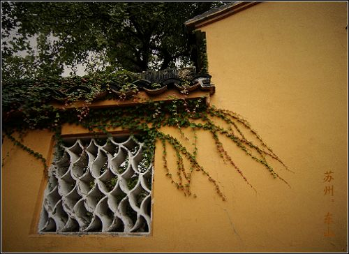
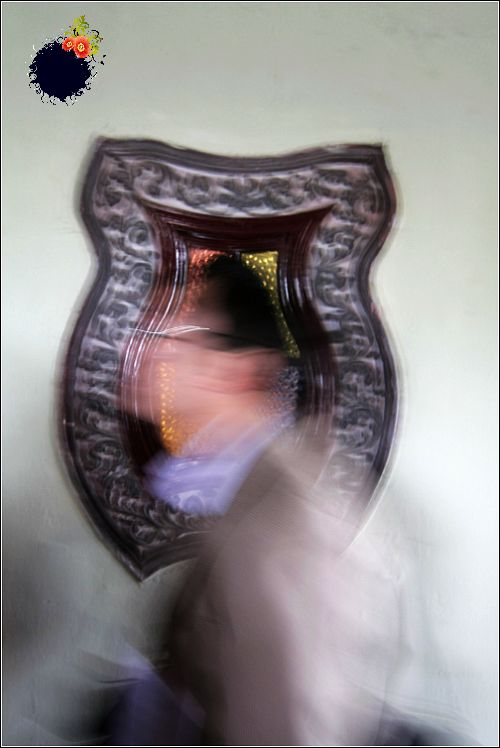
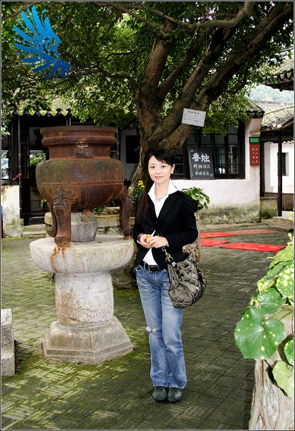
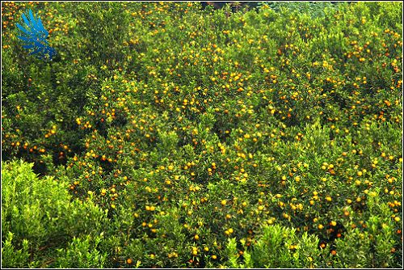
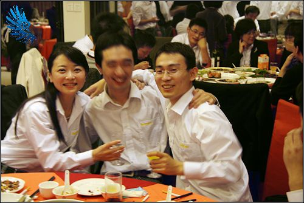
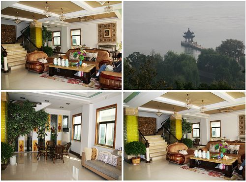
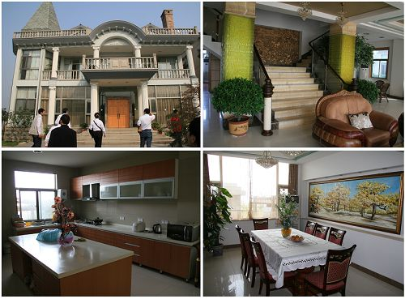

明天是万圣节哦~ @ Oct 30, 2008
每年的10月31日是万圣节，明天我们salsa班的同学老师要聚集一堂，切磋舞艺。
晚上回家给luke也扮扮鬼，去吓吓别人家的狗狗，嘿嘿~

每年的10月31日是万圣节，明天我们salsa班的同学老师要聚集一堂，切磋舞艺。
晚上回家给luke也扮扮鬼，去吓吓别人家的狗狗，嘿嘿~
这部黑色喜剧只停留在讽刺层面，还可以挖掘得更深一些。
电影中的他们使用各种阴谋诡计，有时候不单单是为了自私的目的，他们也在想方设法地不去伤害到别人。不过都是那么的自以为是，自认为对方没有自己会过不下去、过不好......讽刺的是另一半也这么想，也和自己做着相同的事情。
最让人感到奇怪的是最初声称对婚姻免疫的“花花公子”Richard，最终也无可避免地要结婚。Richard在经历一切的左瞒右骗之后，对婚姻改变观念。
生活中总有一些人把自己扮作正义的使者，指点周围人，好象自己是最最正直纯洁的那个。看过这部片子之后，想一想我们谁有资格去评判别人的生活？你不是也做着同样的事情么，由此可见，那些表情“正义可爱”的面孔是多么具有讽刺意义！
电影既没有挖苦爱情，也没有否定婚姻。却带来一个疑问：既然这样，人们为什么要结婚？

昨天晚上满屋子烟，那种气味好象烧纸的味道。
睡觉前肉眼已经能看到屋子上空白茫茫一片，关了所有门窗打开换气扇。
早晨听新闻才知道，原来是苏中地区焚烧秸杆导致的。
每年这时候基本上会从不同地区飘来焚烧秸杆的气味。
去年，好象是江浦那边。
这种方式会给夜间驾驶的人带来麻烦，好似下雾，视线不好，容易造成交通事故。
1、人类生育小动画（超级爆笑）
2、和布加迪威龙飙车的后果
3、英文版《说句心里话》。
4、猩猩做仰卧起坐
5、小胖子作中学生广播体操
在东山、西山开会，顺便游览。
东山三面临太湖一面临山，在东山有许多果树，虽然摘橘子的过程有点搞笑，但算是体会了点农家“乐”。西山四面被太湖水环绕的小岛，据说面积有香港那么大。在西山游览了两个景点：天下第九洞和石公山。有空可以去东山西山度周末，至于景点我认为不是必须去看的。
在那里每日正餐一定是太湖“三白”，鸡汤、水芹、笋干烧红烧肉、螃蟹、莼菜汤、白斩鸡....每日如此，苏州属那种菜系？即使每天菜肴品种差不多，我还是对东山西山渐渐有了好感，撇开景点不说，行进在路途中看着太湖边上娇艳的红月季花，在芦苇荡背景下甚是好看，满眼江南风光，一点不做作。
摄影是一件需要热情和激情的去做的事，摄影需要独自思考。
摄影的原始动力可以是热爱生活，可以是对美的追逐，可以是钻研机械理论的兴趣，也可以是很爱很爱一个人。TA才能够孜孜不倦地捧着相机...
三春茶叶四月梅，红枣蜜桃喜相连；
初夏端阳枇杷熟，夏至杨梅满山甜；
五月李子挂满树，花红采摘七月间；
石榴大，葡萄鲜，银杏板栗赶秋天；
雪柿红时蟹橙黄，洞庭桔红霜降边。
我拍摄的东山：





同事拍摄的，遗憾的是很多曝光过头了~






来张开怀畅饮滴。

这是我们公司一个供货商的大别墅，900多平米。据说是90年代在太湖边上买的地自己盖的，现在要买土地，必须要当地户口才行，貌似现在的宅基地。他让家装设计师和他住了两个月，了解他的生活起居习惯后再帮他设计。他生活工作在苏州的木犊，周末过来住。找了村里的一对老夫妻帮忙打理大屋的卫生、照顾一小块菜园，每月给他们2000元人民币。大屋用的是长虹、海信电视，音响也是很一般的国产品牌，大屋正面对太湖，风景很好。在小地方的好处是土财主可以花较少的钱拥有貌似富豪的生活。有人说：人一生拥有1000万人民币（国内）就足够了，之后再多个零，生活本质上也不会有太多差别。


晚上居然在五台山的宝莱纳遇到salsa班上的老师和同学，好开心！
和同学们跳了好多支舞，一个多星期没去上课，第一支舞结束犹如长跑过后的感觉。今天穿的鞋子非常适合转圈，就象带了轮子的旱冰鞋。这种情况下，就恨舞伴儿让我转圈少了。
看到一对高大肥胖的德国中年男女也在其间，他们的salsa动作简单但欢快律动，其实只要熟悉salsa的节奏和基本舞步就可以跳，无须很多技巧，不是吗？
我的朋友们第一次看我跳salsa，说我跳得蛮好（对我要求低。）
疑问1：为什么你们转那么多圈啊？（为了转晕那些旁观者呀。）
疑问2：怎么感觉象恰恰？（都是拉丁美洲出生，能不象么，但肯定不一样。）
疑问3：那个短发的女生跳得最好（短发女生是我们的老师哎！）
我在想，作为业余salsa爱好者，是不是可以更注重salsa的观赏性和自我展示方面？譬如，在双人舞中让女孩子多些柔媚舞姿，多些腰肢跨部的动作学习，即使没有转圈、肢体复杂配合的技巧也可以在简单的配合中跳出美感和自我娱乐性。如果能够这样，对于很多很多没有舞蹈基础的业余爱好者，对于在各种场合中看到我们salsa的旁观者来讲，会是怎样的鼓励呢？！让零基础的人也可以跳出精彩，并从中找到自信，salsa才能被越来越多的南京人所接受和喜欢。
晚上带luke散步，看到一对20岁左右的情侣在长长的马路尽头深情地拥抱。
霜降的夜晚冷极了，他们的拥抱温暖着我。
而对于他们，拥抱又是奢侈的。
有人说：“婚姻是反人类的。”
婚姻却提供了随时可以拥抱的时空。
然而，在婚姻中人们却渐渐疏于这种温暖的拥抱。
听着周杰伦新歌《花海》，回想即将过去的一周，好象不是那么忙忙碌碌的了，生活内容几乎没有变化，可是，为什么呢？
总结了一下：
一、上周末购买好这周的食物放在冰箱里；
二、salsa翘课一周；
三、给luke在宠物店办了张洗澡卡。
上周末买了两条鱼，5只青椒，5个西红柿，两块老豆腐，三块白干，一斤小排，6两精瘦肉，两把青菜，1根山药，小半个冬瓜，一袋黄豆芽，一袋鱼圆，一袋鲜蘑菇，几片平菇。
吃到星期四还剩下鱼1条，2只青椒，2个西红柿，3块白干，1把青菜，1根山药。
生活应该就是这样消耗在每日琐碎中的吧？
越来越喜欢“家”，让我放松作我自己的地方。
这样生活着，感觉到塌实，很高兴听到好朋友说：“你现在越来越幽默了。”如果你知道过去的我活得是如何浮躁而紧张，有时甚至在逼自己，和自己较劲儿...如果你感受过那种状态，或许能体会到现在的些许变化。有时真羡慕那些粗线条的人，他们在麻木、冷漠且狡猾的人群中也能快乐着。聪明与狡猾的区别不在智商而在于道德。那么，快乐不在于获得多少，而在于计较得少。
当转身离去，会在心里对自己说：“你才算真正长大。”
生活，应该就是这样的吧？！
所以，不要挣扎。
静止了.所有的花开 ...
遥远了.清晰了爱 ....
情侣们.爱却更喜欢 ....
那时候.我不懂.这场爱 ....
你喜欢.站在那窗台 ....
你好久.都没再来 ....
彩色的.世界染上空白 ....
是你流的泪晕开 ....
不要你离开.距离隔不开 ....
思念变成海.在窗外进不来 ....
原谅说太快.爱成了阻碍 ...
手中的风筝放太快回不来 ....
不要你离开.泪已化不开 ...
经历的阻碍.我在等待重来 ....
天空仍灿烂.她爱着大海 ....
情歌被打败.爱已不存在 .....
来自意大利的Liu．Jo于1996年由两个热爱中国文化的意大利设计师开创。位于北京和上海的专卖店都走简约的装饰风格，皱皮铁+黑色衣橱，显得高贵宽敞。它的服装很有女人味，但不造作，设计师在裁剪和图案设计上下了很大工夫，将女人的柔媚和帅气合而为一，最适合追求精致、讲究个性的时尚都会女子。其品牌系列有四个：LIU. JO、L.J、L.Jgbd、AJAY 。
Liu．Jo是意大利一个年轻的国际化时尚品牌，在意大利发展了450个多种品牌销售商店和11个单一品牌商店。在法国，英国，比利时，荷兰等国家，Liu．Jo已经进入了250多个多种品牌销售商店。2001年6月Liu．Jo在上海恒隆广场成立了其在意大利以外的第一个单一品牌专卖店。(品牌介绍来自：trends.com.cn)
Liu.Jo上衣，丝毛针织衫，可当开衫穿，也可以作为大披肩用，很有女人味的小荷叶边。左边袖口为精致水钻镶嵌出的logo，且为双层袖口，做工细腻，既不显眼又起了点缀效果。很喜欢这件上衣，喜欢那些关注到细节的设计。可惜这是用卡片机拍摄的:(

6e来了，又走。
自从2005年中国第一次网志年会之后。
仅南大就有700多人应聘他们的职位，今天在东大招聘。
南京正下着雨，气温缓缓下降，而我居然在交谈中忘了拿出包里的相机。
6e胖了，皮肤上泛着健康的光泽，语速依然缓慢。
虽然同年出生，但他稳重地气质俨然象个兄长。
这两年都在尽量避开世俗世界，享有清净自我。
生活安逸，工作稳定，隐隐中期待着天空中的某种光亮。
我庆幸，自己不是孤独中唯一的一个。